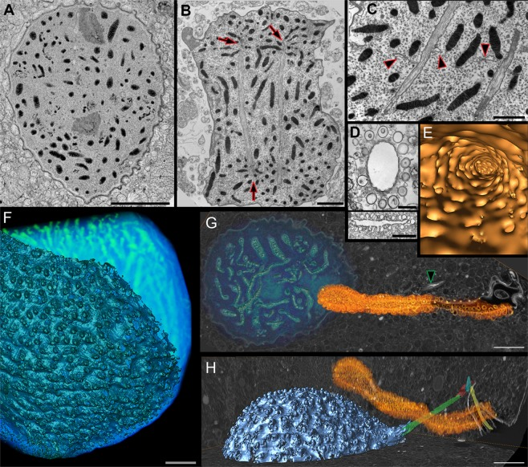

pusule
A dinoflagellate membrane organelle connected to a flagellar canal, comprising sacs, tubules or collecting chambers with associated diverticula. Its wall includes an invaginated plasma membrane apposed to vacuolar membrane; the canal-connected lumen is not a sealed intracellular compartment. [DOI:10.1007/BF01279820]

NCBITaxon:271679) · Gregory S. Gavelis, Maria Herranz, Kevin C. Wakeman, Christina Ripken, Satoshi Mitarai, Gillian H. Gile, Patrick J. Keeling, Brian S. Leander; CC BY, via PubMed Central · CC_BY_4_0 · source: PMC PMC6351617.1 Fig2 · DOI:10.1038/s41598-018-37065-wSynonyms: pusule apparatus
Components
| Component | Type | Part of / acts on | Grounding | Genes | Stoichiometry | Essential | Role |
|---|---|---|---|---|---|---|---|
| membrane | OTHER | part of | GO:0016020 | UNKNOWN | Apposed plasma and vacuolar membranes form the pusular wall.
|
Canonical examples
NCBITaxon:271679Polykrikos kofoidii — Wild-collected pseudocolonies examined by TEM and FIB-SEM. Figure 2D-E shows the collecting duct and associated diverticula; G-H locates the pusule beside the nucleus. [DOI:10.1038/s41598-018-37065-w]NCBITaxon:2945Prorocentrum micans — Armored species in the tracer study; publisher-deposited abstract read via Crossref, not the full paper. [DOI:10.1139/b87-098]NCBITaxon:2961Amphidinium carterae — Unarmored species in the tracer and serial-section TEM study; abstract-only access. [DOI:10.1139/b87-098]
Discussions
- CURATION_TODO (RESOLVED): Keep the pusule distinct from the contractile vacuole and the nuclear net. Similar names or spatial proximity do not establish equivalent structures.
- CURATION_TODO (OPEN): Resolve physiological transport functions and molecular constituents with direct evidence. Tracer entry into a surface-connected lumen is not evidence of transmembrane transport.
Evidence
DOI:10.1007/BF01279820Dodge (1972), Protoplasma. Primary publisher summary read; morphology varies between tubular, sac and vesicle-associated forms. Publisher offers only a subscription preview; PDF and discovery routes did not yield readable full text. No numerical dimensions imported.DOI:10.1139/b87-098Klut, Bisalputra and Antia (1987), Canadian Journal of Botany. Crossref publisher abstract reports horseradish peroxidase, cationized ferritin and lectins entering pusules via the flagellar canal in both species. Publisher HTML/PDF routes returned 403 and title searches yielded citations, not full text. No cytoplasmic delivery or nutrient assimilation inferred.DOI:10.1038/s41598-018-37065-wGavelis et al. (2019), Scientific Reports. Primary Results, collection Methods and Figure 2 read through PMC BioC/JATS; figure visually inspected. Elaborate plasma-membrane infoldings are identified as pusules. Collecting-duct and diverticular topology is visible without implying a transport mechanism.GO:0043227Broad membrane-bounded-organelle parent verified in QuickGO; membrane-bounded does not assert that the lumen is closed. The record denotes the entire pusular apparatus, not the plasma membrane alone.
Curation history
2026-10-03T16:41:23Zcodex · CREATED_RECORD — Scaffolded by scripts/new_record.py2026-10-03T16:42:47Zcodex · EXPANDED_RECORD — Added source-bounded membrane anatomy, three verified species examples, physiological uncertainty, identity boundaries and inspected CC BY microscopy provenance.